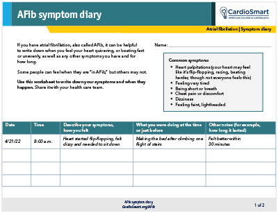

Mission
Improve the patient experience in remote health monitoring by replacing fragmented manual symptom tracking with structured digital data capture and a more accessible support experience.
Problem
Patients managing health-related symptoms or device-guided workflows may need to record symptoms, activities, timestamps, and notes over time. Manual tracking can create friction for users and make information harder to review consistently.
Approach
Designed a mobile-first symptom diary concept that allows patients to log symptoms, activities, and notes in a structured format. The concept was later expanded to explore how an AI assistant could help answer common non-clinical workflow questions and guide users through routine support scenarios.
Validation
Explored the concept through workflow mapping, interface iteration, and feedback from healthcare, product, and technical perspectives. Focus areas included usability, clarity, patient experience, data structure, support efficiency, and implementation risk.
Outcome
The project demonstrated how digital symptom capture and AI-assisted support could improve patient engagement, reduce workflow friction, and create more structured information for downstream review.
From Paper to Digital


The comparison shows how structured digital capture can reduce friction in remote healthcare workflows.
AI Support Layer
The concept was later expanded to explore how an AI assistant could help answer common non-clinical workflow questions and guide users through routine support scenarios.
This support layer is presented as a case study concept and is not a replacement for clinical care.